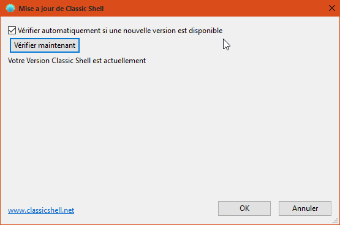

I'd like to know if we'll enjoy one day a french translation of 4.20 beta ? Or when 4.20 beta will become 4.20 final (with a french translation) ?
Thx very much
| Classic Shell http://www.classicshell.net/forum/ |
|
| French translation http://www.classicshell.net/forum/viewtopic.php?f=20&t=4324 |
Page 1 of 1 |
| Author: | topic [ Wed Mar 04, 2015 5:47 am ] |
| Post subject: | French translation |
I'd like to know if we'll enjoy one day a french translation of 4.20 beta ? Or when 4.20 beta will become 4.20 final (with a french translation) ? Thx very much |
|
| Author: | Ivo [ Wed Mar 04, 2015 8:40 am ] |
| Post subject: | Re: 4.20 beta classic shell version |
Most likely the next release version will be when Windows 10 becomes close to final. I don't know when that's going to happen. But when it does, it will have a French translation. Until then you can manually install the French translation for version 4.1.0. It should work fine except for one or two new settings that will be in English. |
|
| Author: | topic [ Wed Mar 04, 2015 11:36 am ] |
| Post subject: | Re: 4.20 beta classic shell version |
Thx very much, I do appreciate Classic Shell. |
|
| Author: | PhiliP190 [ Sun Aug 30, 2015 9:58 am ] |
| Post subject: | Re: French translation |
I notice you the folling bug wich is just a translation bug : With "Classic Shell Update", in french, when CS is up to date (after having "verifier maintenant"), the windows says "Votre Version Classic Shell est actuellement".  wich means absolutely nothing in french or is perfectly incorrect. The right sentence is "Votre version de Classic Shell est à jour.". Et voilààà Post scriptum : It could be also "Votre version de Classic Shell est actuellement à jour" but that's not really correct neither. Prefer "Votre version de Classic Shell est à jour." |
|
| Author: | KevinS54 [ Mon May 02, 2016 4:59 am ] |
| Post subject: | Re: French translation |
Thanks for the french support ! |
|
| Page 1 of 1 | All times are UTC - 8 hours [ DST ] |
| Powered by phpBB® Forum Software © phpBB Group https://www.phpbb.com/ |
|